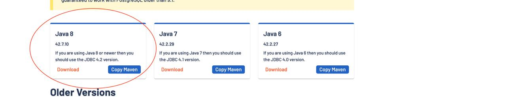
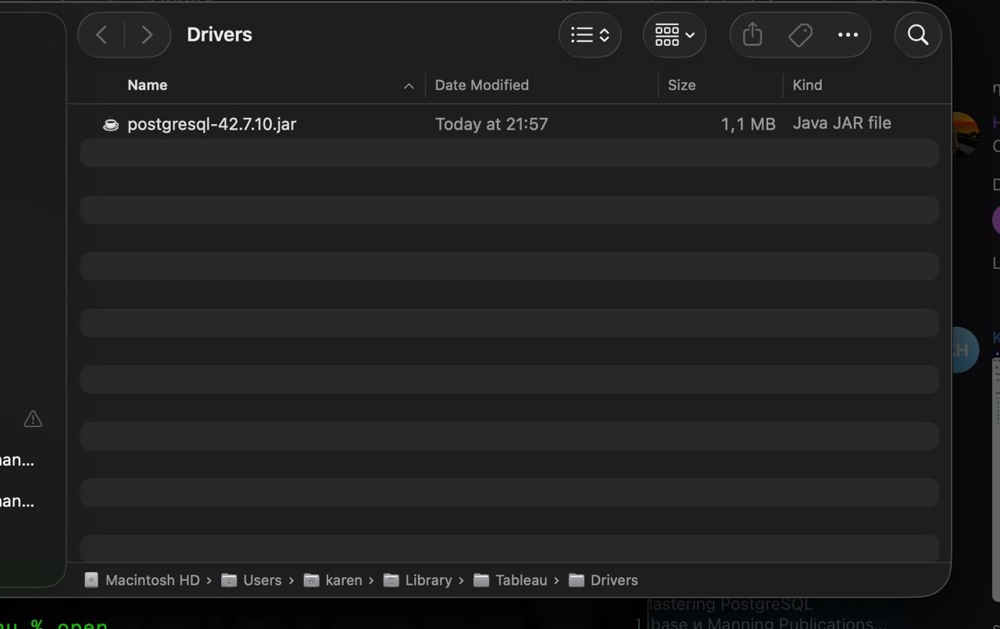
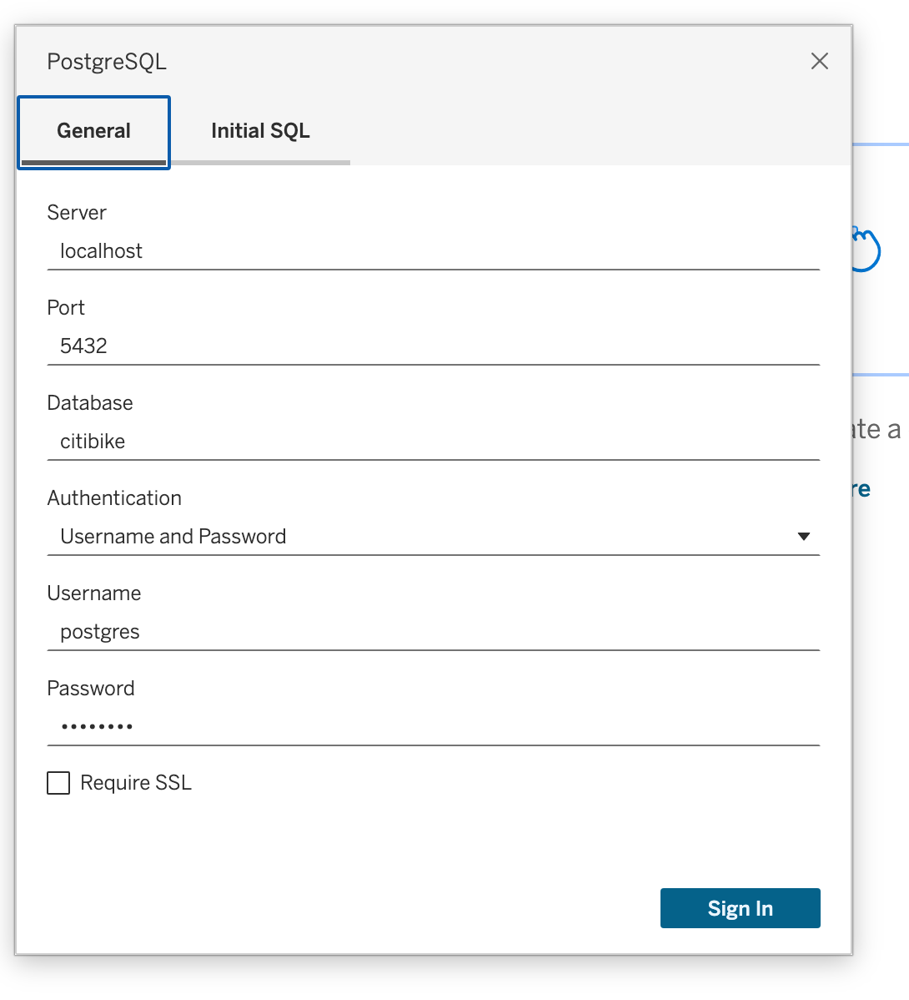
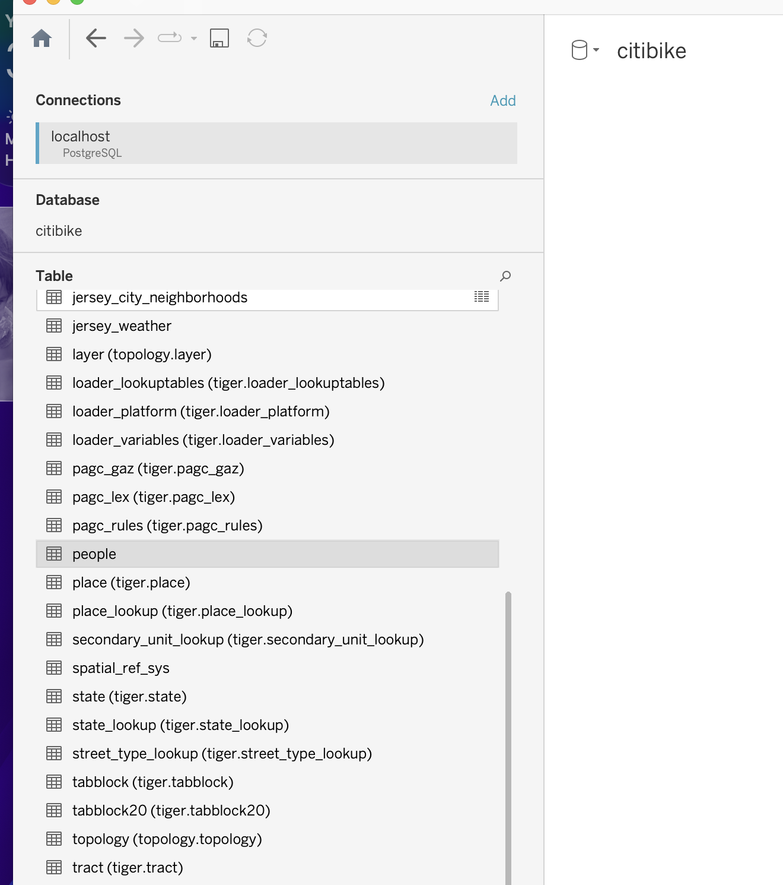
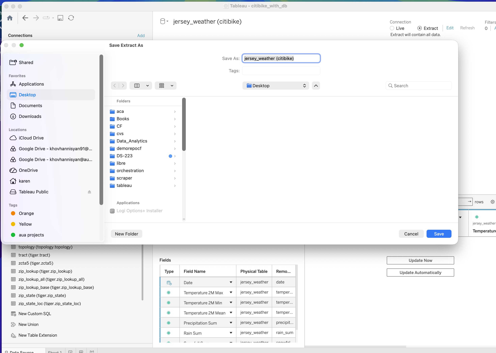

Session 07: Spatial Analytics
Working with Geographic Data in Tableau
Spatial Analytics
Spatial analytics focuses on analyzing data that contains a geographic component.
Unlike traditional visualizations, spatial analysis allows us to understand how data behaves in relation to location, distance, and geographic structures. It enables answering questions such as where events occur, how locations interact, how movement happens across space, and how metrics vary across regions.
Maps are powerful because they allow patterns to be understood visually. They are especially useful when geography is not just a visual element, but a key part of the analysis.
For this Session we are going to use citibike Database
If you haven’t created yet make sure to create one.
The steps creating the citibik db you can find here
Connecting Tableau With Database | MacOS
Before connecting Tablea with the citibike, first we need to setup the connector.
Downloading the JDBC connector
Visit here and download JDBC connector

Put the .jar file in Tableau
Open the terminal and type the following command:
cd ~/Library/Tableau/Drivers\[\downarrow\]
open .\[\downarrow\]
put the downloaded file there

Connecting Tableau With Database | Windows
Downloading the JDBC connector
Visit here and download JDBC connector
Put the .jar file in Tableau
"C:\Program Files\Tableau\Drivers"If Drivers folder does not exist create it
Check the connection
Once the above mentioned steps achieved we can check the connection.
- Open Tableau Desktop
- Navigate to the Other Connection
- Type the credentions which you find in YOUR
.envfile



Tableau Dashboard with Database
At this stage, we already have our core database tables loaded into PostGIS:
| Table | Type | Purpose |
|---|---|---|
jersey_city |
normal table | ride-level Citi Bike data |
jersey_weather |
normal table | daily weather data |
jersey_city_neighborhoods |
spatial table | neighborhood polygons |
jc_2025_stations |
spatial table | station points |
The goal now is to create a dashboard-ready SQL view for Tableau.
Instead of asking Tableau to join multiple raw tables, we prepare one analytical view inside PostgreSQL.
This is usually better because the logic becomes centralized in the database.
Why Create a View for Tableau?
A SQL view is a saved query.
It behaves like a table, but the data is generated from the underlying query.
For Tableau, this is useful because we can expose a clean analytical dataset.
Instead of giving Tableau this:
jersey_city
jersey_weather
jersey_city_neighborhoods
jc_2025_stationswe give Tableau this:
vw_tableau_citibike_dashboardThis view can already include:
- ride-level information
- date fields
- station fields
- weather fields
- start neighborhood
- end neighborhood
- ride duration
- approximate ride distance
Create a Materialized View for Tableau
Now we will create a materialized view.
A materialized view is better for dashboards because PostgreSQL physically stores the result of the query.
This means Tableau does not need to recalculate all joins every time the dashboard is opened.
The previous section already introduced the difference between a normal VIEW and a MATERIALIZED VIEW, where the materialized view is recommended for dashboard performance.
In order to review the views and materialized views you can check this session.
Why Use a Materialized View for Tableau?
For Tableau, a materialized view is useful when the dashboard query contains:
- joins
- spatial joins
- date calculations
- weather enrichment
- distance calculations
- aggregation-ready fields
In our case, the dashboard view joins:
| Source | Purpose |
|---|---|
jersey_city |
ride-level data |
jersey_weather |
daily weather data |
jersey_city_neighborhoods |
start and end neighborhood lookup |
Because this logic is repeated many times in Tableau, we will store the result in:
mv_tableau_citibike_dashboardMaterialized View Grain
The materialized view will have the following grain:
one row = one Citi Bike rideThis is important.
It means Tableau can still aggregate the data flexibly.
For example, Tableau can aggregate rides by:
- day
- month
- hour
- bike type
- user type
- start station
- end station
- start neighborhood
- end neighborhood
- weather condition
Create Materialized View with SQLAlchemy
You can also us the DataGrip and execute the
mv.
from sqlalchemy import textcreate_tableau_materialized_view_sql = """
DROP MATERIALIZED VIEW IF EXISTS mv_tableau_citibike_dashboard;
CREATE MATERIALIZED VIEW mv_tableau_citibike_dashboard AS
WITH ride_base AS (
SELECT
c.ride_id,
c.rideable_type,
c.member_casual,
c.started_at,
c.ended_at,
c.started_at::date AS ride_date,
EXTRACT(YEAR FROM c.started_at)::int AS ride_year,
EXTRACT(QUARTER FROM c.started_at)::int AS ride_quarter,
EXTRACT(MONTH FROM c.started_at)::int AS ride_month,
TO_CHAR(c.started_at, 'Month') AS ride_month_name,
TO_CHAR(c.started_at, 'Day') AS ride_day_of_week,
EXTRACT(ISODOW FROM c.started_at)::int AS ride_day_number,
EXTRACT(HOUR FROM c.started_at)::int AS ride_hour,
CASE
WHEN EXTRACT(ISODOW FROM c.started_at) IN (6, 7)
THEN 'Weekend'
ELSE 'Weekday'
END AS weekday_type,
EXTRACT(EPOCH FROM (c.ended_at - c.started_at)) / 60.0 AS ride_duration_minutes,
c.start_station_id,
c.start_station_name,
c.end_station_id,
c.end_station_name,
c.start_lat,
c.start_lng,
c.end_lat,
c.end_lng,
ST_SetSRID(
ST_MakePoint(c.start_lng, c.start_lat),
4326
) AS start_geom,
ST_SetSRID(
ST_MakePoint(c.end_lng, c.end_lat),
4326
) AS end_geom
FROM jersey_city AS c
WHERE
c.ride_id IS NOT NULL
AND c.started_at IS NOT NULL
AND c.ended_at IS NOT NULL
AND c.ended_at > c.started_at
AND c.start_lat IS NOT NULL
AND c.start_lng IS NOT NULL
AND c.end_lat IS NOT NULL
AND c.end_lng IS NOT NULL
)
SELECT
r.ride_id,
r.rideable_type,
r.member_casual,
r.started_at,
r.ended_at,
r.ride_date,
r.ride_year,
r.ride_quarter,
r.ride_month,
TRIM(r.ride_month_name) AS ride_month_name,
TRIM(r.ride_day_of_week) AS ride_day_of_week,
r.ride_day_number,
r.ride_hour,
r.weekday_type,
r.ride_duration_minutes,
r.start_station_id,
r.start_station_name,
r.end_station_id,
r.end_station_name,
r.start_lat,
r.start_lng,
r.end_lat,
r.end_lng,
start_n.neighborhood AS start_neighborhood,
end_n.neighborhood AS end_neighborhood,
ST_Distance(
r.start_geom::geography,
r.end_geom::geography
) / 1000.0 AS distance_km,
CASE
WHEN ST_Distance(r.start_geom::geography, r.end_geom::geography) / 1000.0 < 1
THEN 'Short'
WHEN ST_Distance(r.start_geom::geography, r.end_geom::geography) / 1000.0 < 3
THEN 'Medium'
ELSE 'Long'
END AS distance_group,
CASE
WHEN r.ride_duration_minutes < 10
THEN 'Short'
WHEN r.ride_duration_minutes < 30
THEN 'Medium'
ELSE 'Long'
END AS duration_group,
w.temperature_2m_max,
w.temperature_2m_min,
w.temperature_2m_mean,
w.precipitation_sum,
w.rain_sum,
w.snowfall_sum,
w.wind_speed_10m_max,
CASE
WHEN w.precipitation_sum > 0
THEN 'Precipitation'
ELSE 'No Precipitation'
END AS precipitation_flag,
CASE
WHEN w.temperature_2m_mean < 0
THEN 'Freezing'
WHEN w.temperature_2m_mean < 10
THEN 'Cold'
WHEN w.temperature_2m_mean < 20
THEN 'Mild'
ELSE 'Warm'
END AS temperature_group
FROM ride_base AS r
LEFT JOIN jersey_weather AS w
ON r.ride_date = w.date::date
LEFT JOIN jersey_city_neighborhoods AS start_n
ON ST_Within(r.start_geom, start_n.geometry)
LEFT JOIN jersey_city_neighborhoods AS end_n
ON ST_Within(r.end_geom, end_n.geometry);
"""with engine.begin() as connection:
connection.execute(text(create_tableau_materialized_view_sql))Check the Materialized View
query = """
SELECT *
FROM mv_tableau_citibike_dashboard
LIMIT 10;
"""
pd.read_sql(
query,
con=engine
)Check Number of Rows
query = """
SELECT
COUNT(*) AS number_of_rows
FROM mv_tableau_citibike_dashboard;
"""
pd.read_sql(
query,
con=engine
)Check Data Quality
Before connecting Tableau, we should check whether important dashboard fields are missing.
query = """
SELECT
COUNT(*) AS total_rides,
COUNT(temperature_2m_mean) AS rides_with_weather,
COUNT(*) - COUNT(temperature_2m_mean) AS rides_missing_weather,
COUNT(start_neighborhood) AS rides_with_start_neighborhood,
COUNT(*) - COUNT(start_neighborhood) AS rides_missing_start_neighborhood,
COUNT(end_neighborhood) AS rides_with_end_neighborhood,
COUNT(*) - COUNT(end_neighborhood) AS rides_missing_end_neighborhood,
COUNT(distance_km) AS rides_with_distance,
COUNT(*) - COUNT(distance_km) AS rides_missing_distance
FROM mv_tableau_citibike_dashboard;
"""
pd.read_sql(
query,
con=engine
)Create Indexes on the Materialized View
Unlike a normal view, a materialized view stores data physically.
So we can create indexes directly on it.
Indexes help Tableau filter and aggregate faster.
with engine.begin() as connection:
connection.execute(text("""
CREATE UNIQUE INDEX IF NOT EXISTS idx_mv_tableau_ride_id
ON mv_tableau_citibike_dashboard (ride_id);
"""))
connection.execute(text("""
CREATE INDEX IF NOT EXISTS idx_mv_tableau_ride_date
ON mv_tableau_citibike_dashboard (ride_date);
"""))
connection.execute(text("""
CREATE INDEX IF NOT EXISTS idx_mv_tableau_ride_month
ON mv_tableau_citibike_dashboard (ride_year, ride_month);
"""))
connection.execute(text("""
CREATE INDEX IF NOT EXISTS idx_mv_tableau_ride_hour
ON mv_tableau_citibike_dashboard (ride_hour);
"""))
connection.execute(text("""
CREATE INDEX IF NOT EXISTS idx_mv_tableau_member_casual
ON mv_tableau_citibike_dashboard (member_casual);
"""))
connection.execute(text("""
CREATE INDEX IF NOT EXISTS idx_mv_tableau_rideable_type
ON mv_tableau_citibike_dashboard (rideable_type);
"""))
connection.execute(text("""
CREATE INDEX IF NOT EXISTS idx_mv_tableau_start_station
ON mv_tableau_citibike_dashboard (start_station_name);
"""))
connection.execute(text("""
CREATE INDEX IF NOT EXISTS idx_mv_tableau_end_station
ON mv_tableau_citibike_dashboard (end_station_name);
"""))
connection.execute(text("""
CREATE INDEX IF NOT EXISTS idx_mv_tableau_start_neighborhood
ON mv_tableau_citibike_dashboard (start_neighborhood);
"""))
connection.execute(text("""
CREATE INDEX IF NOT EXISTS idx_mv_tableau_end_neighborhood
ON mv_tableau_citibike_dashboard (end_neighborhood);
"""))Refresh Materialized View
A materialized view does not update automatically.
If we load new Citi Bike months or new weather data, we must refresh it.
with engine.begin() as connection:
connection.execute(
text("REFRESH MATERIALIZED VIEW mv_tableau_citibike_dashboard;")
)Concurrent Refresh
If the materialized view is used by Tableau, it is better to refresh it concurrently.
This allows users to continue reading the old version while PostgreSQL refreshes the new version.
To use concurrent refresh, the materialized view must have a unique index.
We already created:
idx_mv_tableau_ride_idThen we can run:
with engine.begin() as connection:
connection.execute(
text("REFRESH MATERIALIZED VIEW CONCURRENTLY mv_tableau_citibike_dashboard;")
)REFRESH MATERIALIZED VIEW CONCURRENTLY requires a unique index on the materialized view.
In our case, we use ride_id as the unique key.
Create Helper Function to Refresh the Dashboard View
Instead of writing the refresh code every time, we can create a small helper function.
def refresh_tableau_dashboard_view(engine, concurrently=False):
if concurrently:
refresh_sql = """
REFRESH MATERIALIZED VIEW CONCURRENTLY mv_tableau_citibike_dashboard;
"""
else:
refresh_sql = """
REFRESH MATERIALIZED VIEW mv_tableau_citibike_dashboard;
"""
with engine.begin() as connection:
connection.execute(text(refresh_sql))Use it:
refresh_tableau_dashboard_view(
engine=engine,
concurrently=True
)Preview Fields for Tableau
query = """
SELECT
ride_id,
ride_date,
ride_month_name,
ride_day_of_week,
weekday_type,
ride_hour,
rideable_type,
member_casual,
start_station_name,
end_station_name,
start_neighborhood,
end_neighborhood,
ride_duration_minutes,
duration_group,
distance_km,
distance_group,
temperature_2m_mean,
temperature_group,
precipitation_sum,
precipitation_flag,
rain_sum,
snowfall_sum,
wind_speed_10m_max
FROM mv_tableau_citibike_dashboard
LIMIT 10;
"""
pd.read_sql(
query,
con=engine
)Tableau Dashboard Prototype
Now we can design a long-format dashboard.
The dashboard should be scrollable, because we want to show several analytical sections.
Recommended Tableau dashboard size:
| Setting | Value |
|---|---|
| Dashboard type | Fixed size |
| Width | 1400 px |
| Height | 2400 px |
| Layout | Vertical / long format |
| Main container | Vertical container |
| Section containers | Horizontal containers inside vertical container |
| Best use | Desktop / presentation / web publishing |
The dashboard should connect to:
mv_tableau_citibike_dashboardDashboard Layout
Full Dashboard Structure
Dashboard: Citi Bike Jersey City 2025
Vertical Container
│
├── Header Container
│
├── KPI Container
│
├── Trend Analysis Container
│
├── User and Bike Mix Container
│
├── Geography Container
│
├── Weather Impact Container
│
├── Station Performance Container
│
├── Detail Table Container
│
└── Footer / Notes ContainerDashboard Size
Use a fixed long dashboard.
| Property | Value |
|---|---|
| Width | 1400 px |
| Height | 2400 px |
| Background | light |
| Padding | 16 px |
| Section spacing | 20 px |
| Sheet title font | 14–16 px |
| KPI font | 28–36 px |
Section 1: Header
Container type:
Horizontal containerRecommended size:
| Property | Value |
|---|---|
| Width | 1400 px |
| Height | 120 px |
Content:
| Element | Size | Purpose |
|---|---|---|
| Dashboard title | 900 x 60 | main title |
| Date range filter | 250 x 60 | filter dashboard by date |
| Member type filter | 200 x 60 | filter member/casual |
| Bike type filter | 200 x 60 | filter bike type |
Suggested title:
Citi Bike Jersey City 2025 DashboardSuggested subtitle:
Ride demand, stations, neighborhoods, and weather impactSection 2: KPI Cards
Container type:
Horizontal containerRecommended size:
| Property | Value |
|---|---|
| Width | 1400 px |
| Height | 180 px |
Create five KPI cards.
| KPI | Tableau Calculation | Size |
|---|---|---|
| Total Rides | COUNT([Ride Id]) |
260 x 140 |
| Avg Ride Duration | AVG([Ride Duration Minutes]) |
260 x 140 |
| Avg Distance | AVG([Distance Km]) |
260 x 140 |
| Member Share | SUM(IIF([Member Casual]='member',1,0)) / COUNT([Ride Id]) |
260 x 140 |
| Rainy Day Rides | SUM(IIF([Precipitation Flag]='Precipitation',1,0)) |
260 x 140 |
Recommended design:
| Property | Value |
|---|---|
| Container | horizontal |
| Card background | very light gray |
| Border | thin |
| Padding | 12 px |
| KPI number | large |
| KPI label | small |
Section 3: Ride Trend Analysis
Container type:
Vertical containerRecommended size:
| Property | Value |
|---|---|
| Width | 1400 px |
| Height | 420 px |
Sheets:
| Sheet | Chart Type | Size |
|---|---|---|
| Daily Rides Trend | line chart | 1360 x 260 |
| Rides by Hour | bar chart | 660 x 140 |
| Rides by Day of Week | bar chart | 660 x 140 |
Layout:
Vertical Container
│
├── Daily Rides Trend
│
└── Horizontal Container
├── Rides by Hour
└── Rides by Day of WeekFields:
| Chart | Columns | Rows | Marks |
|---|---|---|---|
| Daily Rides Trend | ride_date |
COUNT(ride_id) |
line |
| Rides by Hour | ride_hour |
COUNT(ride_id) |
bar |
| Rides by Day of Week | ride_day_of_week |
COUNT(ride_id) |
bar |
Section 4: User and Bike Mix
Container type:
Horizontal containerRecommended size:
| Property | Value |
|---|---|
| Width | 1400 px |
| Height | 320 px |
Sheets:
| Sheet | Chart Type | Size |
|---|---|---|
| Rides by Member Type | bar chart | 430 x 280 |
| Rides by Bike Type | bar chart | 430 x 280 |
| Member Type by Bike Type | stacked bar | 470 x 280 |
Fields:
| Chart | Dimension | Measure |
|---|---|---|
| Rides by Member Type | member_casual |
COUNT(ride_id) |
| Rides by Bike Type | rideable_type |
COUNT(ride_id) |
| Member Type by Bike Type | rideable_type, member_casual |
COUNT(ride_id) |
Section 5: Geography Overview
Container type:
Vertical containerRecommended size:
| Property | Value |
|---|---|
| Width | 1400 px |
| Height | 520 px |
Sheets:
| Sheet | Chart Type | Size |
|---|---|---|
| Start Neighborhood Map | map | 680 x 360 |
| End Neighborhood Map | map | 680 x 360 |
| Top Start Neighborhoods | horizontal bar | 680 x 140 |
| Top End Neighborhoods | horizontal bar | 680 x 140 |
Layout:
Vertical Container
│
├── Horizontal Container
│ ├── Start Neighborhood Map
│ └── End Neighborhood Map
│
└── Horizontal Container
├── Top Start Neighborhoods
└── Top End NeighborhoodsImportant note:
For Tableau maps using only the materialized view, we already have:
start_lat
start_lng
end_lat
end_lngSo we can create station/ride point maps directly.
For neighborhood polygon maps, connect Tableau also to:
jersey_city_neighborhoodsor export neighborhood polygons separately.
Section 6: Weather Impact
Container type:
Vertical containerRecommended size:
| Property | Value |
|---|---|
| Width | 1400 px |
| Height | 420 px |
Sheets:
| Sheet | Chart Type | Size |
|---|---|---|
| Rides vs Temperature | scatter plot | 680 x 260 |
| Rides by Temperature Group | bar chart | 680 x 260 |
| Rides on Precipitation Days | bar chart | 680 x 140 |
| Daily Rides and Temperature | dual-axis line | 1360 x 140 |
Layout:
Vertical Container
│
├── Horizontal Container
│ ├── Rides vs Temperature
│ └── Rides by Temperature Group
│
└── Horizontal Container
├── Rides on Precipitation Days
└── Daily Rides and TemperatureSuggested fields:
| Chart | Fields |
|---|---|
| Rides vs Temperature | temperature_2m_mean, COUNT(ride_id) |
| Rides by Temperature Group | temperature_group, COUNT(ride_id) |
| Rides on Precipitation Days | precipitation_flag, COUNT(ride_id) |
| Daily Rides and Temperature | ride_date, COUNT(ride_id), AVG(temperature_2m_mean) |
Section 7: Station Performance
Container type:
Vertical containerRecommended size:
| Property | Value |
|---|---|
| Width | 1400 px |
| Height | 420 px |
Sheets:
| Sheet | Chart Type | Size |
|---|---|---|
| Top Start Stations | horizontal bar | 680 x 280 |
| Top End Stations | horizontal bar | 680 x 280 |
| Station Flow Matrix | heatmap | 1360 x 120 |
Layout:
Vertical Container
│
├── Horizontal Container
│ ├── Top Start Stations
│ └── Top End Stations
│
└── Station Flow MatrixFields:
| Chart | Dimension | Measure |
|---|---|---|
| Top Start Stations | start_station_name |
COUNT(ride_id) |
| Top End Stations | end_station_name |
COUNT(ride_id) |
| Station Flow Matrix | start_station_name, end_station_name |
COUNT(ride_id) |
For the station flow matrix, use top N stations only.
Otherwise, the heatmap will become too large and unreadable.
Section 8: Detail Table
Container type:
Vertical containerRecommended size:
| Property | Value |
|---|---|
| Width | 1400 px |
| Height | 320 px |
This section is for detailed inspection.
Fields:
| Field | Purpose |
|---|---|
ride_id |
ride identifier |
started_at |
start time |
ended_at |
end time |
ride_duration_minutes |
duration |
rideable_type |
bike type |
member_casual |
user type |
start_station_name |
start station |
end_station_name |
end station |
start_neighborhood |
start neighborhood |
end_neighborhood |
end neighborhood |
distance_km |
distance |
temperature_2m_mean |
weather context |
Use this as a detail table for selected filters.
Tableau Dashboard Wireframe
┌──────────────────────────────────────────────────────────────────────────────┐
│ Citi Bike Jersey City 2025 Dashboard │
│ Ride demand, stations, neighborhoods, and weather impact │
│ [Date Filter] [Member Filter] [Bike Type Filter] │
└──────────────────────────────────────────────────────────────────────────────┘
┌──────────────┬──────────────┬──────────────┬──────────────┬──────────────┐
│ Total Rides │ Avg Duration │ Avg Distance │ Member Share │ Rainy Rides │
└──────────────┴──────────────┴──────────────┴──────────────┴──────────────┘
┌──────────────────────────────────────────────────────────────────────────────┐
│ Daily Rides Trend │
└──────────────────────────────────────────────────────────────────────────────┘
┌──────────────────────────────────────┬───────────────────────────────────────┐
│ Rides by Hour │ Rides by Day of Week │
└──────────────────────────────────────┴───────────────────────────────────────┘
┌──────────────────────────────────────┬───────────────────────────────────────┐
│ Rides by Member Type │ Rides by Bike Type │
└──────────────────────────────────────┴───────────────────────────────────────┘
┌──────────────────────────────────────────────────────────────────────────────┐
│ Member Type by Bike Type │
└──────────────────────────────────────────────────────────────────────────────┘
┌──────────────────────────────────────┬───────────────────────────────────────┐
│ Start Location Map │ End Location Map │
└──────────────────────────────────────┴───────────────────────────────────────┘
┌──────────────────────────────────────┬───────────────────────────────────────┐
│ Top Start Neighborhoods │ Top End Neighborhoods │
└──────────────────────────────────────┴───────────────────────────────────────┘
┌──────────────────────────────────────┬───────────────────────────────────────┐
│ Rides vs Temperature │ Rides by Temperature Group │
└──────────────────────────────────────┴───────────────────────────────────────┘
┌──────────────────────────────────────┬───────────────────────────────────────┐
│ Rides on Precipitation Days │ Daily Rides and Temperature │
└──────────────────────────────────────┴───────────────────────────────────────┘
┌──────────────────────────────────────┬───────────────────────────────────────┐
│ Top Start Stations │ Top End Stations │
└──────────────────────────────────────┴───────────────────────────────────────┘
┌──────────────────────────────────────────────────────────────────────────────┐
│ Station Flow Matrix │
└──────────────────────────────────────────────────────────────────────────────┘
┌──────────────────────────────────────────────────────────────────────────────┐
│ Ride Detail Table │
└──────────────────────────────────────────────────────────────────────────────┘
┌──────────────────────────────────────────────────────────────────────────────┐
│ Footer / Data Source Notes │
└──────────────────────────────────────────────────────────────────────────────┘Recommended Tableau Sheets
| Sheet Name | Chart Type | Data Source |
|---|---|---|
KPI - Total Rides |
KPI text | mv_tableau_citibike_dashboard |
KPI - Avg Duration |
KPI text | mv_tableau_citibike_dashboard |
KPI - Avg Distance |
KPI text | mv_tableau_citibike_dashboard |
KPI - Member Share |
KPI text | mv_tableau_citibike_dashboard |
KPI - Rainy Day Rides |
KPI text | mv_tableau_citibike_dashboard |
Daily Rides Trend |
line chart | mv_tableau_citibike_dashboard |
Rides by Hour |
bar chart | mv_tableau_citibike_dashboard |
Rides by Day of Week |
bar chart | mv_tableau_citibike_dashboard |
Rides by Member Type |
bar chart | mv_tableau_citibike_dashboard |
Rides by Bike Type |
bar chart | mv_tableau_citibike_dashboard |
Member Type by Bike Type |
stacked bar | mv_tableau_citibike_dashboard |
Start Location Map |
symbol map | mv_tableau_citibike_dashboard |
End Location Map |
symbol map | mv_tableau_citibike_dashboard |
Top Start Neighborhoods |
horizontal bar | mv_tableau_citibike_dashboard |
Top End Neighborhoods |
horizontal bar | mv_tableau_citibike_dashboard |
Rides vs Temperature |
scatter plot | mv_tableau_citibike_dashboard |
Rides by Temperature Group |
bar chart | mv_tableau_citibike_dashboard |
Rides on Precipitation Days |
bar chart | mv_tableau_citibike_dashboard |
Daily Rides and Temperature |
dual-axis line | mv_tableau_citibike_dashboard |
Top Start Stations |
horizontal bar | mv_tableau_citibike_dashboard |
Top End Stations |
horizontal bar | mv_tableau_citibike_dashboard |
Station Flow Matrix |
heatmap | mv_tableau_citibike_dashboard |
Ride Detail Table |
text table | mv_tableau_citibike_dashboard |
Suggested Tableau Calculated Fields
Total Rides
COUNT([ride_id])Average Ride Duration
AVG([ride_duration_minutes])Average Distance
AVG([distance_km])Member Ride Flag
IF [member_casual] = 'member' THEN 1 ELSE 0 ENDRainy Ride Flag
IF [precipitation_flag] = 'Precipitation' THEN 1 ELSE 0 ENDClean Start Neighborhood
IFNULL([start_neighborhood], 'Outside Jersey City / Unknown')Clean End Neighborhood
IFNULL([end_neighborhood], 'Outside Jersey City / Unknown')Dashboard Interaction Design
Use the following filters globally:
| Filter | Field | Apply To |
|---|---|---|
| Date Range | ride_date |
all worksheets |
| Member Type | member_casual |
all worksheets |
| Bike Type | rideable_type |
all worksheets |
| Start Neighborhood | start_neighborhood |
geography and detail sections |
| Weather Group | temperature_group |
weather and trend sections |
Recommended dashboard actions:
| Action | Source Sheet | Target Sheets |
|---|---|---|
| Filter by neighborhood | Top Start Neighborhoods | all sheets |
| Filter by hour | Rides by Hour | detail table and trend |
| Filter by bike type | Rides by Bike Type | all sheets |
| Highlight station flow | Station Flow Matrix | detail table |
Dashboard Building Order in Tableau
Build the dashboard in this order:
- Connect to PostgreSQL
- Select
mv_tableau_citibike_dashboard - Create KPI sheets
- Create time trend sheets
- Create member and bike mix sheets
- Create geography sheets
- Create weather sheets
- Create station sheets
- Create detail table
- Create fixed-size dashboard
- Add vertical container
- Add sections one by one
- Add filters at the top
- Apply filters to all relevant worksheets
- Add dashboard actions
Resources
Github Repo
Tableau Course Code Repository for this session is available in the GitHub repository linked above. It includes:
- Tableau workbook with all examples
- Sample datasets